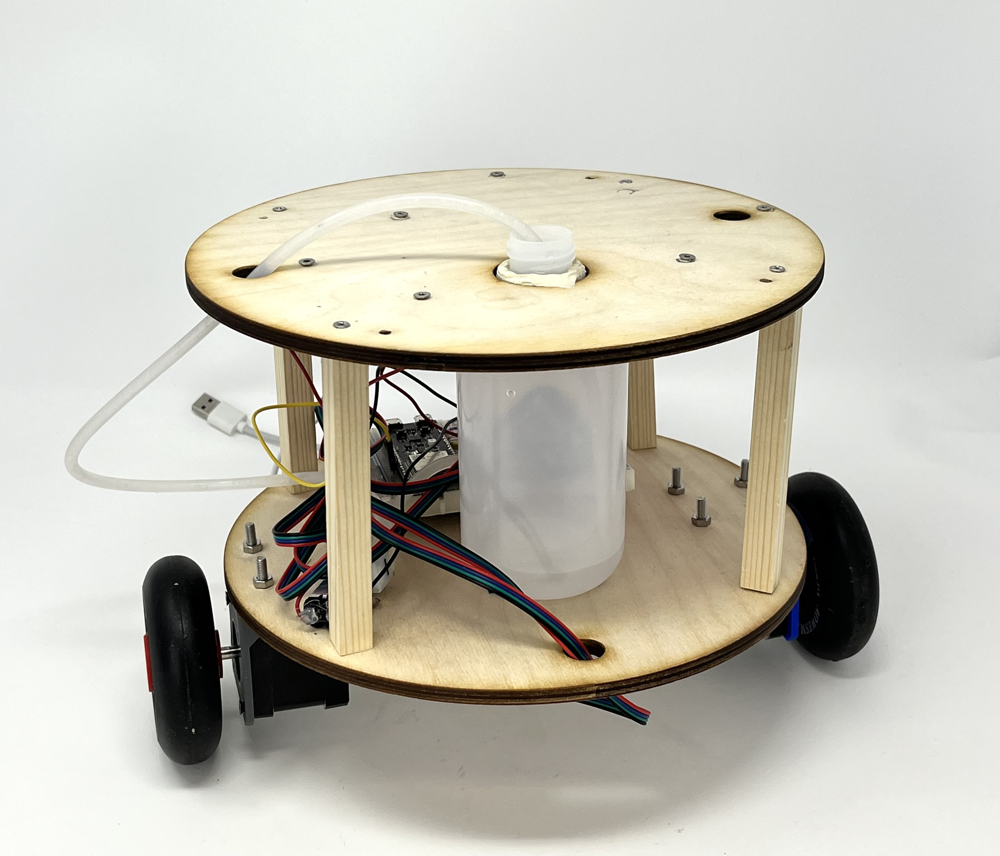
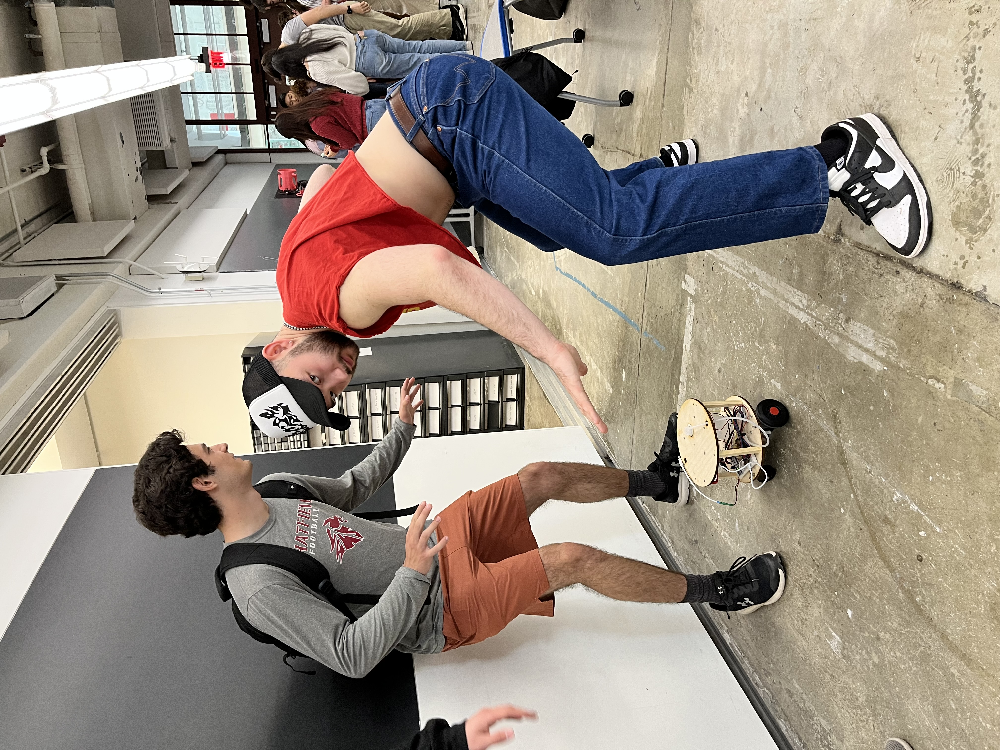
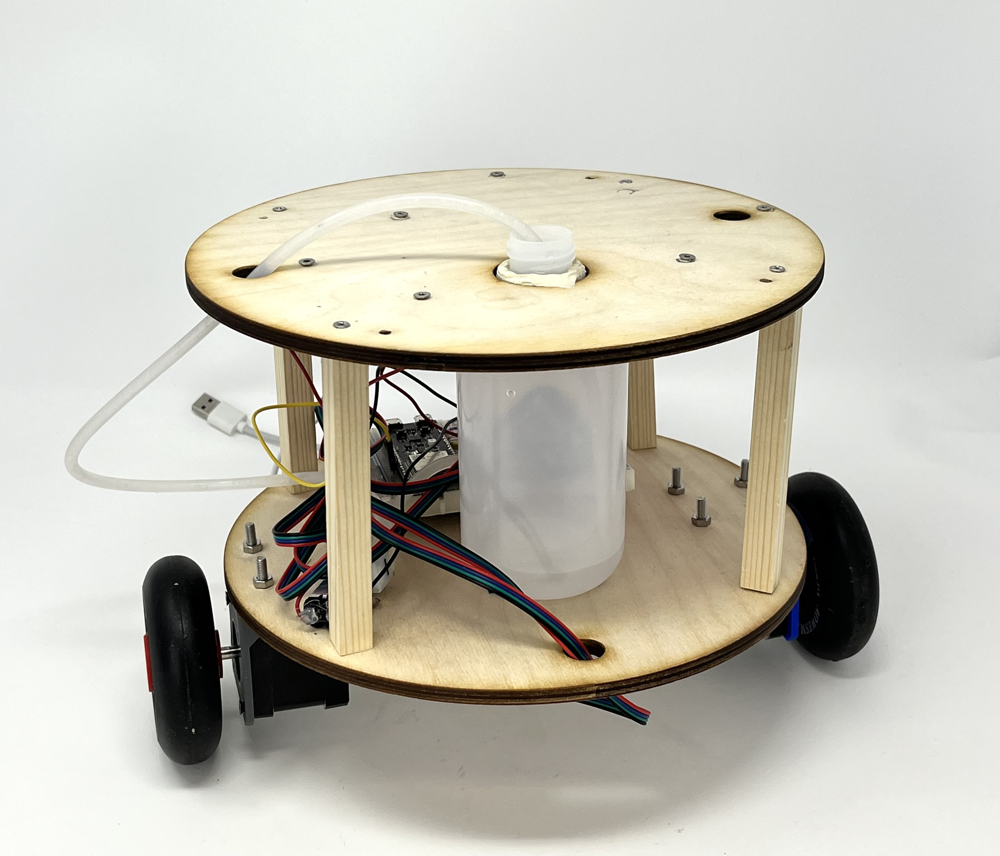
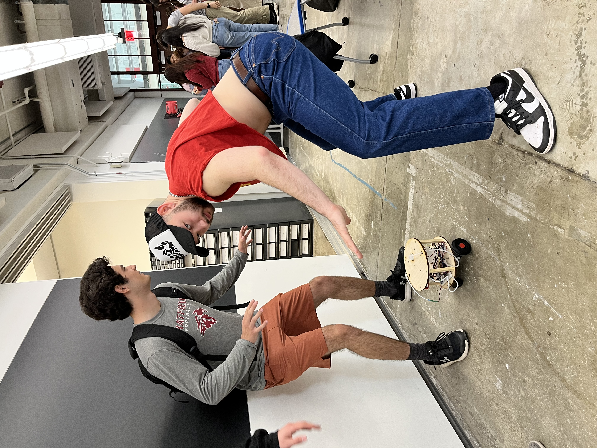

Week 10
Machine Building
The assignment:
- Work with a partner or group of 3. Program one or more microcontroller(s) to obtain and respond to information from the internet or radio. Your project should include at least one input and one output.
As part of the Thursday group, my role in this project was creating and implementing the end effector. Read more about the entire project and everyone's parts here! Or on Geoff's website, who compiled the previous document onto his machine building page.
End Effector
Materials:
And then we considered how much safer it would be to create those drawings with water!
Thus, our end effector was a mini pump that drew from a water container on the chassis. We used this relay module tutorial from Random Nerd Tutorials to control the flow of the pump using a 5V 2-channel relay module (though you only need one of these channels). The code itself is simple, sending LOW to the relay pin to get the current flowing, and HIGH to stop the current. A few tests proved the flow and stop to be rather immediate. Below is the relay code, which got integrated into the full code later on.
Here's a test-run with temporary wiring:

And here's how the final drawing machine -- whom the cool kids call Hydro Homie -- turned out!:  
- 1 5V 2-Channel Relay Module with Optocoupler
- 1 mini air pump + tubing
- 1 container for water (or other liquids!)
And then we considered how much safer it would be to create those drawings with water!
Thus, our end effector was a mini pump that drew from a water container on the chassis. We used this relay module tutorial from Random Nerd Tutorials to control the flow of the pump using a 5V 2-channel relay module (though you only need one of these channels). The code itself is simple, sending LOW to the relay pin to get the current flowing, and HIGH to stop the current. A few tests proved the flow and stop to be rather immediate. Below is the relay code, which got integrated into the full code later on.
/*********
Rui Santos
Complete project details at https://RandomNerdTutorials.com/esp32-relay-module-ac-web-server/
The above copyright notice and this permission notice shall be included in all
copies or substantial portions of the Software.
*********/
//changed from 26
const int relay = 40;
void setup() {
Serial.begin(115200);
pinMode(relay, OUTPUT);
}
void loop() {
// Normally Open configuration, send LOW signal to let current flow
// (if you're usong Normally Closed configuration send HIGH signal)
digitalWrite(relay, LOW);
Serial.println("Current Flowing");
delay(5000);
// Normally Open configuration, send HIGH signal stop current flow
// (if you're usong Normally Closed configuration send LOW signal)
digitalWrite(relay, HIGH);
Serial.println("Current not Flowing");
delay(1000);
}
Here's a test-run with temporary wiring:
And here's how the final drawing machine -- whom the cool kids call Hydro Homie -- turned out!:  